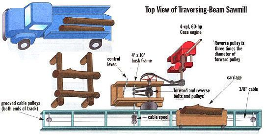
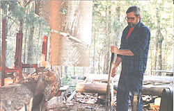
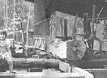
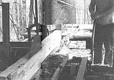
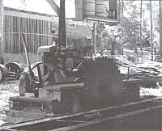
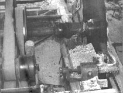
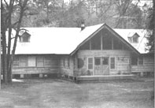

Before I decided to build my family a log house in the woods of central Georgia, I'd had no experience with a sawmill or any association with the sawyers' trade. However, when it came time to square logs and cut extra-thick floor joists and roof beams, I found the most practical and economical way to get it done was to design and build my own mill. . . from scratch and on site.
I am by no means an expert on sawmills, but I am happy to share with MOTHER'S readers what I have learned the hard way by "just doin' it."
You might ask why anyone would want their own sawmill. I have some good reasons. First, if you work with wood, you know how lumber prices have gone through the roof lately. A common construction-grade, kiln-dried, 8-foot 2 x 4 wall stud increased in price by another third just last winter to $3.50 in some places. A 2" x 10" x 12' board used for roof beams or floor joists costs almost $15. So, one advantage of having your own mill is cutting out the delivery middleman and eliminating the cost of shipping lumber all the way to you, which means saving money - a whole lot of money if you have a house, barn, or similarly large structure to raise.
Another appeal of your own mill is that you can cut lumber to any size you fancy The squared logs for walls and oversized timbers I wanted to use for rafters and floor joists were not sold at any building-supply outlet. I'd have had to order them custom-sawed since clear fir or spruce "dimensional" construction lumber comes stocked only in thicknesses and widths calculated to produce the cheapest stick-built house frames. Nearly all framing lumber is a puny 1 3/4" thick. The board that's called a 2 x 4 is no longer an honest 2" thick by 4" wide. That may be how it comes off the log as "actual-measure" rough lumber, but once kiln-dried and planed smooth (so every piece will be same-sized and true in all dimensions), the board is only 1 X" thick and 3 1/2" wide. You pay for the wood that was in the "kerf," the cut in the log that gets turned to sawdust, and for the thin shavings removed to finish the rough board smooth. You just don't get to take the wood chips home with you.
Boards left rough and splintery but full sized may be a tiny fraction of an inch out of true, but they can save you time and wood, as you can space larger boards further apart. Also, if left exposed to view inside the building, over-sized beams and rough-cut boards will give your home a rugged, hand-hewn look.
With your own mill, you can cut local softwoods to frame buildings and you can saw up local hardwood logs for mantles, doors, paneling and other house trim, or to make into furniture. I make use of such scarce hardwoods and hard-to-find softwood species such as black walnut, pecan, cypress, and yellow poplar that would normally be wasted; for example, overgrown shade trees cut out of house lots that are usually split into firewood or burned and chipped on the spot.
The mill has also enabled me to use softwoods that would have gone to waste. Southern yellow pine is the construction-grade lumber they make into pressure-treated rot-proof lumber, called "PT." (And then that gets shipped all over the country from here, wasting I don't know how much energy) Yellow pine grows as a weed tree in Georgia and I have made lumber from trees that were cut down to widen a highway. The construction crew had them piled for burning and didn't mind a bit my hauling them away. I also make lumber from pines that are infested with pine-bark beetles. There is no known way to reverse the beetles, so cutting the tree while it is still living and good for lumber seems more logical than letting it die and rot away.
Though not all my lumber comes from scavenging, I get a considerable feeling of satisfaction when I can turn a tree that would have been wasted into something useful. And, so long as my truck runs and I continue to spot trees that are free for the taking, the mill allows me to cut anything from a baseball bat to a house with little thought about raw material costs.
Sawmills are pretty straightforward. In the traditional mill, there is a power source, a wheeled carriage on a track, a sawblade, and assorted shafts and bearings all connected with gears or a collection of drums, belts, and pulleys. Designing and building a mill from scratch won't be for everyone, because it does require a degree of mechanical aptitude and a few tools. Buying a ready-to-run mill or a kit is an option if you can smoke one out, and if money is no object. But my mill is proof that you can build your own a lot cheaper using not much more than common sense and good old-fashioned determination. You don't need all the trades I've worked at to build a sawmill either, just basic mechanical skill and a few metal-working tools. And, you can always find a helping hand. Mobile welders "have truck, will travel," and metal fabricators carry raw steel stock in all sizes and can cut and weld your parts to order.
You have four kinds of serious-duty mills to consider: There is a choice between a band saw or a circular saw in either a portable or stationary installation. In a stationary mill, the log is levered onto a wheeled carriage (often called a log beam) that rides on a track and is pulled past a large blade powered by a heavy-duty power source. In a portable mill, the log remains stationary. A much smaller blade, along with the small engine that powers it, is pulled past the log.
A band-saw mill is an oversized version of the common wood- shop power tool. It is a closed loop of thin, flexible steel, with sawteeth along one edge, that runs continuously around a set of flat pulleys. To develop cutting speed and maintain momentum without breaking, a "6-foot mill" capable of cutting large logs requires an extensive structure with big pulleys to support the 36" run of 6"- to-10" wide blade needed to expose six feet of running blade. This type of rig was common in 18th and 19th century water-powered mills where the massive wood beams of the blade-support mechanism stretched between three stories of the mill house. If you have trees coming in at 2 1/2' thick you may want to check out such a mill, and you will have to find a commercial wood-products industry supplier for pulleys, blades, and bandsaw mill designs.
I am told that today's portable band saws will get through two-foot logs fairly well if you go slow enough. They operate by running 6' or more of 1'- or 1 1/2'-wide closed-loop ribbon blade between flat pulleys in a frame hung between parallel tracks. The running blade, frame and pulleys, power head, and all are pulled past the stationary log, peeling off a board in each pass.
In the more conventional stationary circular-saw mill, a heavy, 3'- to 5'-diameter toothed-disc blade is bolted to one end of a heavy mandrel, a shaft running in ball or roller bearings mounted to a heavy base. A bladeweight flywheel/drive pulley is bolted to the other end of the shaft to provide balance and momentum and to hold the flat drive belt. Other power-drive pulleys are attached in between. Like a stationary band saw, it can be powered by water, a big electric motor, or an automobile or tractor engine. (I run an antique 4-cylinder J. I. Case tractor-type engine, but I've seen mills powered by V-8s from cars and by big old electric motors. The really big rigs use Cat diesels.) The blade and flywheel develop enough momentum to buzz through a log as fast as the carriage can traverse in its back-and-forth route past the blade.
Portable circular saws are a new wrinkle that I have seen advertised. I have never seen one in action, but I can't image that any blade you can haul behind a pickup can be large or heavy enough to develop the momentum to cut boards out of a serious-sized log in one pass and at any speed.
The main advantage of a portable bandsaw mill is that it is designed to be assembled and disassembled reasonably fast, so you can haul it to a site in your pickup, set it up, and be working the same day. Also, the kerf from the thin blade is narrow, so you conserve wood. It uses less gas than the autotype engine of a stationary saw, the engine and bearings last about as long (2,500 hours on average between rebuilds), but costs much less to rebuild or replace ($250 at the outside compared to $900 or more).
The cost of a portable mill is about $1,500 for the base mill, plus an optional $500+ for a mechanical jack-hoist to get the logs up on the bed. A stationary mill, with all components but the engine bought new, would cost $5,000 or $6,000, and about half that used - and you still have to install it. This compares to my total cost of under $1,000.
The portable band saw, with its thin blade and small engine, doesn't have much weight and power to deliver to the log. So it is painfully, achingly slow compared to a circular saw, taking minutes to cut a board that the old-time buzz saw will whip through in seconds. I have also heard that the frames are not made of the heaviest materials known, which is fine for their portability; but, if the saw is to cut straight and not bind, the frame must be square, rigid, level, and plumb at all times. And, it's far from easy to keep it that way when you are dumping heavy logs onto a base that is little but a rectangle of thin angle-iron that can bow, cant, or sink into the soil at odd angles.
WHY MAKE A SAWMILL?
For one, the price of a common construction-grade 8', 2 x 4 wall stud increased by over 30% just last winter - in some places to $3.50!
I know of one would-be house builder who spent all his free cash on his foundation, well, septic, a woods jeep, chain saws, and a portable band-saw mill, intending to custom-cut his own 2-bys and siding, and raise a house in a summer of weekends. He underestimated the time and difficulty of cutting, topping, trimming, hauling, and sectioning each tree. Say nothing of getting each log through the woods to the mill, then levering it onto the mill base, making repeated passes to square at least two sides, splitting the log into 2"-thick slabs ...then ripping each slab to a 4" width, then stacking bark slabs and boards ...then piling sawdust, cleaning up the saw, covering it against rain, and finally lugging boards to the foundation. Only then did he get to start work on the house. He finally decided it was easier to pull uniformly dry and perfectly dimensioned 2x4s from weatherproof packages set out around the foundation by the building- supply outlet's boom-equipped truck. But, by then the summer was gone and so was his enthusiasm. The saw frame rusted in place for two more years before he gave up and sold out.
A big circular-saw blade will lose its edge if it hits an old metal fence staple grown over by bark. But a band-saw blade can snap, just as it can hitting a hard knot, or if it binds when it slows down in wet wood, or if you don't wedge the board away from the log late in a tough cut. Portable band-saw blades are made from a very hard spring steel that will describe tight arcs in the pulleys, but that can't be repaired. It can't be resharpened by hand unless you have a half-day to do it, so it must be replaced at a cost of $20 and up. The huge ribbon blades used in stationary band-saw mills are made of soft enough steel they can be welded and sharpened, which is a good thing, as they cost well over a hundred dollars apiece.
A big circular-saw blade will last forever, but to cut quickly and cleanly, the teeth must be sharpened frequently and evenly, and (on crosscut saws) their angle of attack must be reset periodically. Unlike band-saw blades, they seldom break, which is good, as they cost in the hundreds of dollars. Those with hardened-steel teeth inset into a soft-steel body can be rebuilt. But, the itinerant tinkers who repaired holes in cooking pots, ground mother's scissors and carving knives, and sharpened every saw blade on the place are a thing of the past. You must learn to tend your own blade. Sharpening angle for each style blade and tooth is different, and a small Dremel-type hand-held electric motor with Carborundum burrs will get it done a whole lot faster than a hand file.
Also on the downside, you can't get fixed-place sawmills or even sawmill plans by mail from Sears Roebuck anymore. You'll have to design your own, locate or build the components, and then assemble them in place. Engine, millworks, and track require a well-anchored, permanent bed with a roof over and some measure of side protection from blowing rain. Still, I chose to go with a stationary circular-saw mill because it fits my needs better at a lower initial cost and lower operating expenses than a portable band-saw mill.
Arbor - A shaft held in bearings to which a circular saw is fastened.
Babbitt Bearing - A sleeve bearing cast around an axle or shaft in place of using a babbitt metal, a soft, leadlike pot metal that melts at low temperature.
Beam (log beam) - A wheeled carriage that carries a sawlog past a mill saw.
Bearing - A lubricated sleeve or an arrangement of rollers or spheres that holds a shaft, permitting it to rotate with minimal friction.
Feed-works - A grouping of gears or pullies and belts that activate a ratchet wheel or a spool and cable, which moves a log beam to the saw and back.
Journal - A housing that holds a bearing.
Headstocks - Two or more log supports resting atop a log beam. Parts include:
1. Base: Fixed casting with a channel that holds sliding knees.
2. Knees: Sliding, L-shaped castings held in channels on top of headstock base that hold log and move it forward into saw.
3. Dogs (log dogs): Spikes at top of knees that are sunk into back of log to hold it in place for cutting.
4. Set-works: A mechanism that advances knees pushing sawlog in the headstocks to determine depth of cut.
Husk Frame - A low ring of millstones or a wood-beam platform supporting the frame of a large circular saw.
Mandrel - In lumbering, the shaft, journals, and bearings on which a saw is mounted.
Pillow Blocks - A pair of castings that hold a bearing in place.
Smutting - Applying carbon from a low flame to abrade an operating tolerance between shaft and bearing made of cast-in-place babbitt metal.
Traverse - To go back and forth, as a log beam runs past a mill saw repeatedly.
Parts of a Mill
As I see it, there are four basic components to a circular-saw mill:
1. A track at least twice the length of the longest log you will want to saw.
2. A carriage on rails and fitted with headstocks that hold the logs as they travel back and forth past the saw.
3. A firmly anchored husk-frame that holds the rigidly mounted saw and mandrel and saw guide alongside the engine and at the midpoint of the track.
4. A power source that is capable of turning the saw blade under load, and that has enough extra power to move the carriage and force the log into the blade.
A work-saving option for a small mill, but necessary for a high-volume commercial mill, is a hydraulic or mechanical system to operate flippers or hook-equipped chains that rotate a sawlog being debarked and squared a quarter turn before each first cut, to align the squared log in the carriage prior to each pass, to flip slabs into a hopper for bundling, and to propel finished boards along roller chutes to a stacking area. I'm not in that much of a rush, and these are jobs I do with my home-built logging tractor and my peavey - a big hook on a handle used to lever and pry logs over.
There are several ways to obtain needed components and each sawyer must decide which best suits his abilities and resources. One route is to buy a reasonably complete used mill that needs only minor repairs. You'd be surprised how many little one- or two-man mills are scattered through the woods in any well-treed section of the country. They cost about $3,000 in my area - bought "as is/where is," which means you have to take the mill down, move, and reassemble it on your own land. Another way is to design and build a new mill from scratch. This requires time and access to machine shop equipment but relatively little cash cost if salvaged raw materials are used. You can pick up a used, but serviceable, industrial four-cylinder engine or auto engine and transmission for as little as $100, and a used blade for the same. Shafts, bearings, pulleys, and drums for the mandrel that holds the blade and the steel to make the headstock to hold the logs, plus assorted fittings, wheels, lumber, and rail stock will go for maybe another $250, bringing total cost to under $500. Finally, you can go the route I chose-that is, buying the basic essential saw mill parts ready-made to repair or modify and improvising the rest. My total cost was just under $1,000.
I began by building the track that the carriage rolls on from a 42'-long junked mobile home frame and wheels I got for $100. 1 removed the gussets that had held the box from the main I-beams. Then I narrowed the frame from a width of 108" to 32" by cutting 76" out of the center of the cross-braces, moving the I-beams closer together, and then welding the braces back together. I narrowed an axle as well and mounted it to the bottom of the frame, and then reattached the trailer tongue to one end. This gave me a 42'-long, portable frame.
I made a smooth and stable track for the carriage by welding 2" x 1/2" flat-strap steel on top of both I-beams. Then I welded 5/8" round steel rod on top of the flat strap that topped the I-beam that would be closest to the blade. The round fits up into the groove between flanges on the front carriage wheels, keeping the carriage on track.
A'46 Case Engine, Set-works, Headstocks, and feed-works
In a state farmer's market bulletin, I had located a batch of scrapped saw mill components - some of them older than I am. I paid $800 for a 1946 hand-crankstart J. I. Case 60-hp gas engine with a manual clutch that runs as good as new, a 42"-diameter saw blade with inset hardened-steel teeth, a mandrel, the heavy shaft that holds the saw blade on one end, and a big pulley/flywheel on the other, parts for the feed-works - a battery of gears or pulleys that transfers power from engine to carriage, plus three headstocks that hold logs on the carriage and the set-works that propel the logs forward for cutting. Each headstock consists of a heavy-steel base that attaches to the carriage top. Sliding forward and back in a channel on the top of the base are the knees, which hold spiked dogs that are hammered into the back of the log to hold it in place for sawing. Behind the headstocks is the setworks: an arrangement of gears and shafts with a lever that ratchets in small increments to push the knees forward, carrying the log into the blade for cutting.
From pressure-treated lumber, I built a 20"-long carriage in a ladder shape, making the long side rails from doubled 2" x 6" PT stock connected front and back and every four feet with wood I-shaped crossbeams of 2" x 6" PT.
The carriage rides on three pairs of steel wheels on steel-rod axles - a pair at front and back and another in the middle. The three wheels at the rear long side of the frame are fiat; the three in front nearest the saw are heavy-duty grooved pulleys with a 7/8" groove around that fits down over the round steel rod welded to the track to keep the carriage running true.
I could have searched out ball bearings and pillow blocks to fit the three carriage axles and a few other shafts I had to assemble. But I elected to do it the old-fashioned way with babbitt bearings as were used on early automobiles. Babbitt is a soft, leadlike pot metal that can be easily melted and poured into a housing built around a shaft to create a custom-cast sleeve bearing for the shaft to rotate in. The shaft is usually smutted in the bearing area by slowly rotating it over a smoky (smutty) fire. I used an old brass kerosene lantern with wick turned up and no chimney. The greasy carbon-black from the smoke gets between babbitt metal and rotating shaft and wears off just enough clearance to let the shaft run free and prevent babbitt metal from adhering to the shaft (so long as it is kept lubricated; if it isn't, the bearing can heat up and melt).
The Husk Frame and feed-works
Next I made a husk frame beside the track to hold the mandrel - the shaft and supports that hold the blade and power wheel from the engine, plus the feed-works - the belt/pulley mechanism that operates the carriage - and the saw guide that keeps the blade running at the desired slight angle into the log. I made the husk frame from used 4" x 10" wooden beams, as it must be hefty enough to withstand the force and vibration from the rotating saw as well as the pull of the drive belts from the engine.
The feed-works connects a belt from the engine to a drum located in the middle of the track, around which are several wraps of the endless cable that traverses the carriage back and forth on the track. With a single lever, the sawyer is able to advance the loaded carriage into the blade and then pull it back to adjust for another cut or to load up with a new log. I have seen it done in many ways.
I chose a system of flat belts and pulleys using an idler gear because it is simple and I had access to 6"- and 12"-wide grooved flatbelt pulleys that give enough belt contact to yield sufficient driving force without excessive stress. There's not much to it but old-time common sense and ingenuity. I pull on the handle and the levered control pulley tightens the go-forward belt against power and the carriage advances slowly. When I push the handle, the control pulley loosens up just enough on the forward belt to let it slip, at the same time tightening the go-in-reverse belt against power, and the carriage zips back. The difference in speed is due to pulley size; the reverse pulley is three times the diameter of the forward pulley. A pair of screen-door springs under the platform returns the handle to neutral when I let go.
Finally, I mounted the saw guide - a kind of "C" clamp that reaches around the whirring teeth and pinches the blade body to keep it leading into the log at the desired slight angle. The guide isn't for changing the angle of the saw (the mandrel adjustments do that), but supports the blade's leading edge. I located it to jut out of the front of the husk frame up at the forward edge of the saw blade as close to the carriage as possible without touching. The working faces of the guide where they contact the blade should be replaceable hardwood blocks leaving about 1/64" clearance from each face of the blade.
Assembling the Mill
With the four basic components built, it was time to set them in place and get everything in line, plumb, level, and adjusted so as to saw good straight lumber. Some of the adjustments were not so obvious. I had to learn by trial and error such things as saw lead and guide adjustment.
First step was to lay my 42' track. Using a string and line level, I set out a rail bed of recycled but still sound rot-proofed railroad cross-ties, spacing them about 8' apart. Two more ties were sunk to the side at the midpoint to hold the husk frame. Adding still two more cross-ties a little to the left of the husk frame to support the engine, I had my basic foundation. I could dig the cross ties in well and have a firm base because, here in Georgia, we have stable soil and little or no frost to speak of. In desert or beach sand, in the shifting soils of the West and the freezing North, you will have to be sure your mill's foundation is dug deep enough it won't slide downhill after a good rain or frost and heave out of true every winter.
I pulled the trailer-frame/track onto the cross-tie bed, jacked it to remove the road wheels, then lowered, leveled, and straightened it with string and level line, and finally anchored everything solidly into our good red Georgia clay. At the top of the track I made a simple loading rack of logs on posts so I could roll logs directly off the truck and onto the log beam. Down track below the saw I built a long, carriage-high platform with a lip along the open edge to catch boards as they came off the saw.
ENDING WASTE
As long as I continue to spot trees that are free for the taking, the mill allows me to cut anything from a baseball bat to house lumber.
I set the carriage on its wheels in the middle of the track and mounted the three headstocks on top and the adjustment mechanism (the setworks) along the back. Then I placed the husk frame on its crossties and anchored it level and properly oriented to the track. I final-fastened the saw mandrel and feed-works into the husk frame and carefully adjusted everything so that the saw and carriage would be kissing cousin close, but not close enough to ever touch ...arranged front-to-back so the log side of the saw blade would be 1/2" away from the carriage and adjusted top-tobottom so the top of the saw collar is a good 1/2" below the logside lip of the headstocks.
Then I hooked up the cable that would traverse the carriage and sawlogs back and forth. The carriage drive shaft extends from an engine-powered pulley in the feed-works, through a babbitt bushing in a hole I cut in the saw-side I-beam to the cable drive spool in the middle of the track. The end of the shaft extending beyond the drive spool fits into a journal welded to the inside of the outer I-beam. I wrapped the center of the traverse cable several times around the cable drive spool, threaded the cable ends through pulleys at each end of the track, and pulled them back to be attached snugly to the ends of the carriage. Whichever way the spool is turned, the carriage will follow.
Back at the feed-works, I measured, cut, and joined the forward and reverse carriage-feed belts. Then I adjusted the opposed return springs and linkage rod leading to the control lever so that neither the forward nor reverse belt was tight against a power pulley when the lever was released and in neutral.
Next, I mounted the saw blade to the business end of the mandrel, and using a plumb bob and line, adjusted the mandrel on its mounts to assure that the face of the blade was perfectly vertical and parallel to the flight of the carriage. Then, by adjusting the bolts at each side of the forward mandrel bearings, I set the lead so that the blade toed in to an oncoming log by a scant 1/32" and adjusted the saw guide to maintain this lead. (With too little lead, the saw won't bite but will run out and scour the face of the log. With too much lead, the blade will toe in, bind, and rub or lodge in the cut. If you keep cutting with the saw in a bind like that, you can heat the blade so much it warps. Old-time sawyers pulled out a jammed log and with the blade turning slowly, used an old mop and water to cool the hot area on the blade quickly to retemper it and avoid a permanent warp or set. I think it is best to avoid the problem altogether and go slow.)
I anchored the engine on its cross-ties, ran the throttle cable and emergency stop switch up to a little dashboard on the operator's platform I built where the operating lever projected from the feed-works in the husk frame. Then I connected the engine's main drive pulley to the big drive wheel on the saw shaft with a 6"-flat belt. I checked, rechecked, tightened, and retightened till it was finally time to try the contraption out.
Let's Do It!
Okay. Double-check to be sure that all is ready to operate. Be sure the blade is clear and that no loose wood chunks or rocks are nearby to vibrate into it. Be sure the clutch is thrown. Then, start the engine and let it warm up good. Set speed a little above idle and engage the clutch. Stop and adjust the mandrel or collar if the blade wobbles or vibrates. Be sure the main drive belt stays in the center of both main pulleys.
Check that log dogs and knees of the head-works are well away from the blade and mugged down well. Then traverse the carriage back and forth. All should run smoothly; pulleys should run true and belts should track straight without rubbing the insides of their pulleys.
When all appears well, accelerate the engine till the saw blade is revolving at operating speed of 400 to 500 rpm (until you learn to judge speed by ear and cutting efficiency, you can install an rpm gauge if the engine doesn't have one. Or put a mark on the blade and adjust speed so the mark flashes past eight times a second. You know how a second is the time it takes to say "one-thou-sand?" Well, counting as fast as you can, squeeze a count of from one to eight into that same brief time period. Increase speed till the blade turns eight times a second.) Let the engine run for a couple of minutes. Shut down then and check all around. Especially be sure the mandrel is running cool. If the bearings are warm to the touch, they are in a bind and you must realign, oil, loosen journal caps or pillow blocks or whatever is needed to remedy the problem. Then, run for 10 or 15 minutes and check again.
Now it's time to saw that first log. Traverse the carriage back to the loading dock and load up with a small log, about 7" to 9" in diameter. Dog the log down in the headstock and traverse the carriage up to the blade. With the ratchet gear in the setworks, advance the log up so that it just kisses the back of the blade. Back the carriage up and ratchet the log forward about 1/2". Turn the engine up to operating speed and traverse the carriage slowly to make the first cut. Watch carefully to be sure the cut is straight. If all is well, gig the carriage back, advance the log an inch, and take off another slab. Once you have a flat surface all along the cut face of log, pull back and rotate the log so the flat is down. Dog down and cut the next side flat. Continue rotating and cutting till you have as square a log as you want. Now you can cut whatever size lumber you wish from the log. You are in the saw mill business.
The Splitter
In the days of water-powered mills, the big ripsaw that sectioned whole logs was called the head saw and the head sawyer was called the splitter because that's what he tried to do - to cut each log so that boards all come out with the grain running straight longwise from end to end - same as if he had split it into fence rails, dividing it along its natural grain with a maul and wedges.
Sectioning each log to get the most usable wood and arranging logs on the beam is where the splitter is separated from ordinary mortals. Not that I claim to be a fully finished splitter just yet, though I am working on it. You see, the sawyer's objective is to get as many board feet of straight-grained lumber from each log as he can. But, no tree makes it easy, as not a one of them is perfectly straight. All logs - even the straightest lodgepole pines - have some curve to them. Many curve in two dimensions, both front to back and right to left. More than a few have double-reverse curves, twists, splits, knots, knot holes, rotten knotholes, and really rotten limb holes that must be cut out or sawed around.
Commercial building lumber comes in 8' minimum lengths, which is more than you can get in one piece out of a lot of logs. Size increases come in 2' (length) and 2' (width) increments, which creates a lot of waste. But, with your own mill, you can salvage a log that has, say, two 3 1/2' lengths of straight grain between a big knot, a rotten limb hole, and a split top, then eliminate waste by custom-sawing them to odd sizes to match your particular use. With your chain saw, you can section out the 3 1/2'-"shorts" and then saw them thin for that 41"-high rustic wainscoting going into the kitchen, or into 5" x 5" posts to go on concrete piers for porch supports or 17" x 17" x 7" squares to rim the kids' sandbox. You can put that big knot aside to air-dry, and use its hard, swirly-grained burl wood in a base for a glass-topped table, or slice and ornament it for wall hangings. Haul the rot-hollowed piece of trunk back into the woods when next you go after new logs and it will overwinter skunks or shelter rabbit families for years to come. With your own mill, nothing goes to waste.
Orienting logs on the carriage takes a feeling for the grain ...a "sixth-sense" ability to see inside the log to divine how the grain runs, and that ability comes only with experience and careful study of your mistakes. Softwood framing lumber is all cut along grain. You want to place the log with its major curve bending up and down. This way the log will set on its fingers and toes on the beam and the curve will be all in the up-and-down dimension along the log. (It's when grain runs across the long dimension of a board that you introduce weakness.)
Sawing hardwoods you'll want to make quarter-grain and other cuts - each best for different applications. Read a good book on cabinetmaking to learn the difference and the whys and wherefores.
Sawyers' Tricks
As you become acquainted with your mill, you'll learn the little tricks that make it run smooth and accurate. Here are a few tips that work for me and that might save you a few headaches.
Keep sawteeth sharp, as dull teeth can cause the saw to lodge, wander, and do other strange things.
When sharpening the cutting edge of the sawteeth, always keep the file perpendicular to the face of the blade.
Inspect the lower 6' of logs carefully and remove nails or fence wire buried in them; discard a log rather then dull your blade on an old fence staple.
Hose down all sides of logs as soon as they come out of the woods and before dirt can dry on the bark. Dirt dulls blades.
Keep the lead set properly and watch the blade for circles of burned sap or other signs of rubbing.
Listen for the deepening saw sound that may mean a burning or lodging blade. Slow the carriage till sound picks up again.
Build a catch ramp beside the track to field new-sawn boards and put a roller ramp at the end of it to move them along to the drying stacks.
Check cable and belts often for correct tension.
Keep moving parts lubricated and belts dressed with coal tar or other preservative to maintain flexibility.
AND NEVER FORGET: SAFETY FIRST!
As I mentioned at the beginning, I am no expert and I would welcome information about building or running a saw mill from those who have tried their hand. Anyone wanting more details about how I built my mill can write to me at PO Box 601, Byron, GA 31008.
|
 STEVE STANKIEWITZ Dick cuts a log of yellow pine for his home was built with local pine. |
 Rear view of the mill, showing bladeand part of the 42' track. |
 Close-up of the saw blade, mount, and madrel. |
|
 |
 |
 |
|
 |
|
|